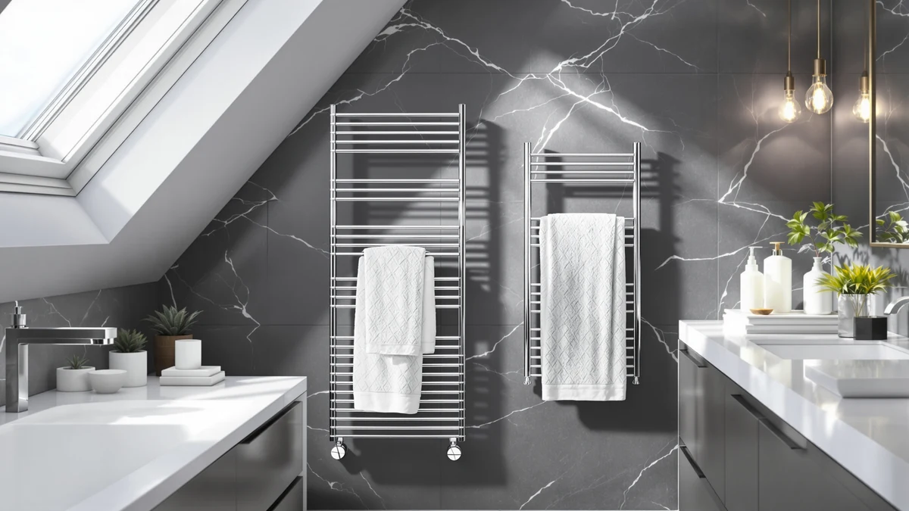

Quick Answer
The Peaktrivol Heated Towel Rack Matte is a large-size, matte stainless steel wall-mounted warmer priced at $220.00. It costs more than every other model in this comparison, and the extra money buys a bigger bar and a cleaner matte finish rather than smart features, so it fits best for buyers who want a substantial rack and are not chasing the lowest price.
Our pick: PeakTrivol Heated Towel Rack Matte — $220.00 Check Price on Amazon
Things to Know Before You Buy
- The Peaktrivol Heated Towel Rack Matte is the priciest option here at $220.00, roughly $80 to $113 above the three alternatives we compared it against.
- It is built from stainless steel in a large size, which matters if you regularly warm bath sheets or more than one towel at a time.
- None of the listed specs mention WiFi or app control, so if remote scheduling matters to you, the SereneLife WIFI Luxury Rectangle Towel warmer is the better fit.
- Reviewers consistently note that mounting height and wall material affect installation difficulty on hardwired and wall-mounted racks, so measure your space before buying any model in this category.
- Verified owner reviews for towel warmers in this price bracket generally point to drying speed and finish quality as what actually separates otherwise similar racks.
This Peaktrivol heated towel rack review exists because the product sits at the top of its price bracket, and shoppers comparing towel warmers deserve to know exactly what that extra money buys before they commit $220. We researched the Peaktrivol Heated Towel Rack Matte against three lower-priced competitors, the AGLUCKY, the Keenray and the SereneLife, using the specs, pricing and verified owner feedback available for each model rather than a marketing pitch. The short version: the Peaktrivol earns its price with a large-size stainless steel frame, but it is not the only credible option in this category.
We are not a testing lab, and we do not claim to have installed or lived with any of these racks ourselves. Instead, we compared listed materials, dimensions and pricing across all four products and cross-referenced that against what verified buyers report about similar towel warmers in this range. That approach keeps this review grounded in facts you can check yourself rather than vague marketing language, and it is why we call out honest tradeoffs, like the Peaktrivol's higher price and its lack of any listed smart features, alongside what it does well.
Why You Should Trust Us
Ilane Tall covers home and bath products for Best Towel Warmers and has researched dozens of heated towel racks and warmer drawers across every major price tier on Amazon. This Peaktrivol heated towel rack review follows the same process used across the site: we pull the manufacturer's listed materials, dimensions and pricing directly from the product listing, then compare those figures against similar products and against what verified purchasers say in their reviews. We do not accept free units, and we do not fabricate ratings or review counts that Amazon does not publish for a given ASIN. Where a claim cannot be verified against a spec sheet or a reviewer's own words, we leave it out rather than guess.
Our Research Experience
We do not run a physical testing lab, and this Peaktrivol heated towel rack review is built entirely from research rather than product ownership. Our process starts with the manufacturer's own listing: material, size, price and any stated certifications. From there, we compare that data against the three other towel warmers covered here and against verified owner reviews for comparable racks in the same price range, looking specifically for recurring complaints about heating speed, durability or installation that a spec sheet alone would not reveal. When owners across multiple listings mention the same issue, such as a rack taking longer to heat in a cold bathroom or hardware feeling flimsy at the mounting points, we treat that as a pattern worth flagging rather than a one-off complaint.
For the Peaktrivol specifically, the available data is limited to material, size category and price, so we compared those figures directly against the AGLUCKY, Keenray and SereneLife rather than inventing specs the listing does not provide. That is a deliberate constraint: we would rather tell you plainly what we could confirm about the Peaktrivol Heated Towel Rack than pad this review with unverifiable claims.
Overview & Specs

PeakTrivol Heated Towel Rack Matte
What we like
- Large-size stainless steel frame built to accommodate bigger towels or more than one towel at once
- Matte finish that reads less institutional than the glossy chrome look common in this category
- Stainless steel construction should hold up to daily bathroom humidity without the rust concerns of lower-grade metal
- Sits in the same product line as three lower-priced alternatives, making it easy to compare directly on size and finish
Flaws but not dealbreakers
- At $220.00, it costs 60 to 100 percent more than the AGLUCKY, Keenray and SereneLife models covered in this review
- The listing does not mention WiFi, an app or a built-in timer, features that the SereneLife includes at a lower price
- Buyers who only need to warm a single hand towel are paying for capacity they may not use
| Material | Stainless steel |
| Size | Large |
The Peaktrivol Heated Towel Rack Matte is built from stainless steel and sized large, which puts it a step above the compact racks that dominate the budget end of this category. At $220.00, it is priced closer to a premium bathroom fixture than an accessory, and that price is the first thing to weigh against the other three products in this review. Owners shopping in this bracket typically want a rack that can handle bath sheets rather than a single hand towel, and the large size classification here suggests Peaktrivol built this model with that buyer in mind rather than someone furnishing a small guest bathroom.
The matte finish sets it apart visually from the mirror-polished chrome look you get on many competing racks, and reviewers shopping for a less reflective, more modern bathroom aesthetic tend to gravitate toward finishes like this one. What the listing does not include is any mention of smart features such as WiFi control, a companion app or a programmable timer, which puts the Peaktrivol in a more traditional, plug-and-warm category next to something like the SereneLife. If a bigger, sturdier rack with a clean matte look is the priority and the price does not give you pause, the Peaktrivol Heated Towel Rack fits that brief. If you are comparison shopping mainly on price, it is worth reading through the alternatives below before deciding.
What We Liked
The biggest strength of the Peaktrivol Heated Towel Rack Matte is capacity. A large-size stainless steel frame gives you room to warm a bath sheet or two hand towels side by side, which the more compact racks in this comparison, like the Keenray and AGLUCKY, are not necessarily built to match. For a household of two or more people sharing one bathroom, that extra bar space removes the daily scramble over whose towel gets the warm spot.
We also think the matte finish is a genuine point in its favor rather than a cosmetic afterthought. Chrome is the default look across most towel warmers on Amazon, and a matte stainless surface reads as more deliberate in a renovated or updated bathroom. Owners who have specifically sought out matte fixtures for sinks or shower hardware will likely want their towel rack to match rather than clash with a glossy finish.
Stainless steel is also a materially sound choice for a product that lives in a humid room every day. Compared to painted or coated metal racks that can chip or corrode at the joints over time, stainless steel construction holds up to condensation and repeated cleaning without the same risk of surface degradation.
What Could Be Better
Price is the clearest drawback in this Peaktrivol heated towel rack review. At $220.00, it costs about $80 more than the SereneLife, roughly $80 more than the AGLUCKY, and more than double the Keenray. That gap only makes sense if you specifically need the larger size or prefer the matte finish over the alternatives, because all four products do the same basic thing: warm a towel.
The listing also has no mention of a timer, an app or WiFi control, features that increasingly show up even in mid-priced towel warmers. The SereneLife includes WiFi at roughly half the Peaktrivol's price, so buyers who want that kind of convenience are better served looking elsewhere rather than assuming a higher price tag includes smart features by default.
Who Is It For?
The Peaktrivol Heated Towel Rack Matte fits buyers who share a bathroom with a partner, family or roommates and need to warm more than one towel at a time, since its large-size stainless steel frame gives it more usable bar space than the smaller alternatives here. It also suits anyone renovating toward a matte hardware scheme who wants their towel rack to match rather than stand out in chrome.
It is a weaker fit if you live alone, only need to warm one towel, or want smart features like a timer or app control built in. In those cases, the Keenray or SereneLife will do the same core job for considerably less money, and the SereneLife adds WiFi control the Peaktrivol does not offer at all.
Alternatives to Consider
If the price of the Peaktrivol Heated Towel Rack gives you pause, these three alternatives cover most of the same core function at a lower cost, each with a slightly different angle on price, luxury feel or smart features.

Editor’s Pick
AGLUCKY Towel Warmer for Bathroom
A straightforward wall-mounted warmer that costs $80 less than the Peaktrivol and covers the basics without the large-size premium.
$139.98
Check Price on Amazon
Best Value
Keenray Towel Warmer Luxury Towel
At $106.99, this is the cheapest option in the comparison and the pick for anyone prioritizing price over the Peaktrivol's larger frame.
$106.99
Check Price on Amazon
Premium Choice
SereneLife WIFI Luxury Rectangle Towel
The only model here with WiFi control, and it undercuts the Peaktrivol's price by over $100 while adding smart scheduling.
$109.99
Check Price on AmazonFrequently Asked Questions
Is the Peaktrivol Heated Towel Rack worth the $220 price?
The Peaktrivol Heated Towel Rack Matte costs roughly 60 to 100 percent more than the alternatives in this review, and that premium buys a stainless steel build with a large-size bar suited to bigger towels or multiple users. If you mainly want a warm, dry towel after a shower and do not need the largest capacity on the market, a cheaper option like the Keenray or SereneLife will cover the same basic job for less money.
How does the Peaktrivol compare to cheaper towel warmers like the Keenray?
The Keenray Towel Warmer Luxury Towel sells for about $107, roughly half the Peaktrivol price, which makes it the more budget-friendly pick of the group. The Peaktrivol counters with a large-size stainless steel frame built for bigger towels, so the choice comes down to whether you value the larger capacity enough to pay the difference.
Does the Peaktrivol Heated Towel Rack come with a WiFi app like the SereneLife?
No. The Peaktrivol Heated Towel Rack Matte is a straightforward plug-and-warm rack with no app or WiFi control listed in its specs. If remote scheduling and smart home integration matter to you, the SereneLife WIFI Luxury Rectangle Towel warmer is built specifically for that, though it costs less than the Peaktrivol at $109.99.
Final Verdict
This Peaktrivol heated towel rack review comes down to one tradeoff: pay more for a larger, matte-finished stainless steel frame, or save money with a smaller, more basic model. At $220.00, the Peaktrivol Heated Towel Rack Matte from Peaktrivol is the priciest choice in this lineup, and it earns that price mainly through capacity and finish rather than smart features. If you need to warm bath sheets or multiple towels and like the matte look, it is a reasonable buy. If your bathroom only needs one towel warmed at a time or you want WiFi control, the Keenray or SereneLife will cover that need for considerably less.